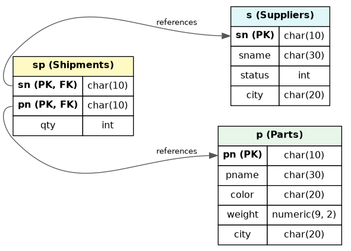
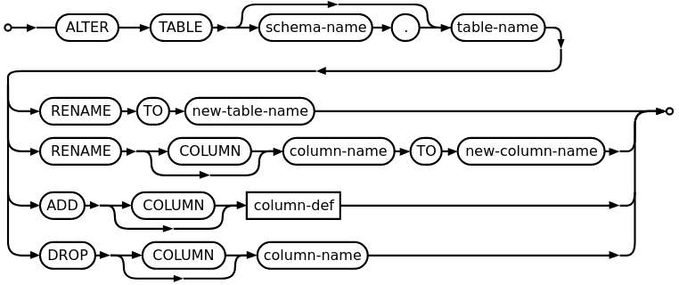

Ahmad Yoosofan
SQL 1
University of Kashan
1 create table s ( 2 sn char(10) primary key, 3 sname char(30), 4 status int default(0), 5 city char(20) 6 ); 7 8 create table p ( 9 pn char(10) primary key, 10 pname char(30), 11 color char(20), 12 weight NUMERIC(9, 2), 13 city char(20) 14 ); 15 16 create table sp ( 17 sn char(10) references s, 18 pn char(10) references p, 19 qty int default(0), 20 primary key (sn, pn) 21 );

1 insert into s(sn, sname, status, city) 2 values('s1', 'Smith', 20, 'London') 3 ; 4 5 insert into p(pn, pname, color, weight, city) 6 values('p1','Nut' ,'Red' ,12.0,'London') 7 ; 8 9 insert into p(pn, pname, color, weight, city) 10 values 11 ('p2', 'Bolt' , 'Green', 17.0, 'Paris' ), 12 ('p5', 'Cam' , 'Blue' , 12.0, 'Paris' ), 13 ('p6', 'Cog' , 'Red' , 19.0, 'London') 14 ;
delete sp;
drop table sp;
1 insert into s(sn, sname, "status", city) 2 values('s4', 'Clark', 20, 'London') 3 ; 4 insert into s(sname, status, city, sn) 5 values('Adams', 30, 'Athens', 's5') 6 ; 7 insert into s 8 values('s6', 'Ali', 40, 'کاشان') 9 ;
نام قطعهها را بیابید.
select pname from p ;
p{pname};
pname |
|---|
Nut |
Bolt |
Screw |
Screw |
Cam |
Cog |
Nut |
Bolt |
1 select sname, status 2 from s 3 ;
1 s{sname, status}; 2 3 -- Relational Algebra
╭───────┬────────╮
│ sname │ status │
╞═══════╪════════╡
│ Smith │ 20 │
│ Jones │ 10 │
│ Blake │ 30 │
│ Clark │ 20 │
│ Adams │ 30 │
│ Ali │ 40 │
╰───────┴────────╯
1 select * 2 from s; 3 ;
╭────┬───────┬────────┬────────╮
│ sn │ sname │ status │ city │
╞════╪═══════╪════════╪════════╡
│ s1 │ Smith │ 20 │ London │
│ s2 │ Jones │ 10 │ Paris │
│ s3 │ Blake │ 30 │ Paris │
│ s4 │ Clark │ 20 │ London │
│ s5 │ Adams │ 30 │ Athens │
│ s6 │ Ali │ 40 │ کاشان │
╰────┴───────┴────────┴────────╯
1 select sname, status + 4 2 from s; 3 ;
╭───────┬────────────╮
│ sname │ status + 4 │
╞═══════╪════════════╡
│ Smith │ 24 │
│ Jones │ 14 │
│ Blake │ 34 │
│ Clark │ 24 │
│ Adams │ 34 │
│ Ali │ 44 │
╰───────┴────────────╯
1 select sname, status + 4 as st4 2 from s; 3 ;
╭───────┬─────╮
│ sname │ st4 │
╞═══════╪═════╡
│ Smith │ 24 │
│ Jones │ 14 │
│ Blake │ 34 │
│ Clark │ 24 │
│ Adams │ 34 │
│ Ali │ 44 │
╰───────┴─────╯
نام قطعهها و وزن آنها را بیابید.
select pname, weight from p ;
p{pname, weight} ;
pname | weight |
|---|---|
Nut | 12 |
Bolt | 17 |
Screw | 17 |
Screw | 14 |
Cam | 12 |
Cog | 19 |
Nut | |
Bolt |
1 insert into p(pn, pname, color, city) 2 values('p7', 'Nut', 'Red', 'London') 3 ;
1 insert into p(pn, pname, color, weight, city) 2 values('p8', 'Bolt', 'Green', null, 'Paris') 3 ;
1 create table s ( 2 sn char(10) primary key, 3 sname char(30) not null, 4 status int default 0, 5 city char(20) 6 );
نام قطعهها و وزن آنها را به گرم بیابید.
1 select pname, weight * 1000 as gweight 2 from p 3 ;
NULL * 1000 → NULL
pname | gweight |
|---|---|
Nut | 12000 |
Bolt | 17000 |
Screw | 17000 |
Screw | 14000 |
Cam | 12000 |
Cog | 19000 |
Nut | |
Bolt |
1 -- نام عرضهکنندگان شهر کاشان را بیابید. 2 3 select sname 4 from s 5 where city = 'کاشان' 6 ;
-- (s where city = 'کاشان') {pname}select sname from s where city = 'Paris' ;
sname |
|---|
Jones |
Blake |
شمارهٔ قطعههای عرضه شده را بیابید.
select pn from sp ;
pn |
|---|
p1 |
p2 |
p3 |
p4 |
p5 |
p6 |
p1 |
p2 |
p2 |
p2 |
p4 |
p5 |
p2 |
نام قطعههای عرضه شده را بیابید.
select pname from p, sp where p.pn = sp.pn ;
( ( ( p rename pn as ppn ) times sp ) where ppn = pn ) {pname}
pname |
|---|
Nut |
Bolt |
Screw |
Screw |
Cam |
Cog |
Nut |
Bolt |
Bolt |
Bolt |
Screw |
Cam |
Bolt |
نام قطعههای عرضه شده را بیابید.
select pname from p natural join sp ;
(p join sp) {pname}
select pname from p join sp using(pn) ;
select pname from p join sp on p.pn=sp.pn ;
نام قطعههایی را بیابید که در شهر آن قطعهها عرضه کنندهای وجود داشته باشد
select pname from p join s using(city) ;
select pname from p natural join s ;
select distinct pname from p natural join s ;
╭───────╮
│ pname │
╞═══════╡
│ Nut │
│ Nut │
│ Bolt │
│ Bolt │
│ Screw │
│ Screw │
│ Cam │
│ Cam │
│ Cog │
│ Cog │
│ Nut │
│ Nut │
│ Bolt │
│ Bolt │
╰───────╯
╭───────╮
│ pname │
╞═══════╡
│ Nut │
│ Bolt │
│ Screw │
│ Cam │
│ Cog │
╰───────╯
نام قطعاتی را بیابید که عرضهکنندهای از شهر کاشان آنها را عرضه کرده باشد.
select pname from (p natural join sp) join s on s.sn=sp.sn where s.city = 'کاشان' ;
select pname from (p natural join sp) join s using(sn) where s.city = 'کاشان' ;
pname |
|---|
Bolt |
create table t ( a int primary key, name char(20) ); insert into t values (1, 'a'),(2, 'b');
select * from t, t as M;
a | name | a | name |
|---|---|---|---|
1 | a | 1 | a |
1 | a | 2 | b |
2 | b | 1 | a |
2 | b | 2 | b |
select t.name from t, t as M where t.a < M.a;
name |
|---|
a |
select * from t join t as M on t.a < M.a;
a | name | a | name |
|---|---|---|---|
1 | a | 2 | b |
نام قطعاتی را بیابید که وزن آنها دست کم از وزن یک قطعهٔ دیگر بیشتر باشد نام تکراری در پاسخ نیاید.
نام همهٔ قطعات را بیابید به جز قطعه یا قطعههایی که کمترین وزن را دارند
1 select T.pname 2 from p as T 3 ;
1 select T.pname 2 from p as T, p 3 where p.weight < T.weight 4 ;
1 select distinct T.pname 2 from p as T, p 3 where p.weight < T.weight 4 ;
1 select distinct T.pname 2 from p as T join p on 3 p.weight < T.weight 4 ;
╭───────╮ │ pname │ ╞═══════╡ │ Bolt │ │ Screw │ │ Cog │ ╰───────╯
نام قطعههای عرضه شده را همراه با نام عرضهکنندگانشان بیابید زوج نام تکراری در پاسخ نیاید.
select pname, sname from s, sp, p where s.sn = sp.sn and p.pn = sp.pn ;
select distinct pname, sname from s natural join sp join p using(pn) ;
╭───────┬───────╮
│ pname │ sname │
╞═══════╪═══════╡
│ Nut │ Smith │
│ Bolt │ Smith │
│ Screw │ Smith │
│ Cam │ Smith │
│ Cog │ Smith │
│ Nut │ Jones │
│ Bolt │ Jones │
│ Bolt │ Blake │
│ Bolt │ Clark │
│ Screw │ Clark │
│ Cam │ Clark │
│ Bolt │ Ali │
╰───────┴───────╯
نام قطعاتی را بیابید که وزنشان دست کم از وزن یک قطعهٔ با رنگ قرمز کمتر باشد
select distinct T.pname from p as T, p where p.weight > T.weight and p.color='Red' ;
select distinct T.pname from p as T join p on p.weight > T.weight where p.color='Red' ;
pname |
|---|
Nut |
Bolt |
Screw |
Cam |
select distinct p.pname from p as p1 join p on p1.weight > p.weight and p1.color = 'Red' ;
نام شهرهای قطعاتی را بیابید که با P آغاز شده باشد
select city from p where city like 'P%' ;
نام قطعاتی را بیابید که کاراکتر دوم نامشان o باشد.
select pname from p where city like '_o%' ;
نام شهر قطعاتی را بیابید که درون نام شهر آنها رشتهٔ is وجود داشته باشد
select city from p where city like '%is%' ;
نام قطعات و شهرهای آنها را بیابید که شهر آنها دست کم سهحرفی باشند و با رشتهٔ _bn آغاز شود.
select pname, city from p where city like 'bn\_%' ;
select pname from p where city like 'P\_%' escape '\' ;
select pname from p where city like 'P!_%' escape '!' ;
select pname from p where city like 'P#_%' escape '#' ;
select pname from p where city like "an\_%" escape "\" ; -- "
نام قطعاتی را بیابید که در شهر پاریس باشند و پاسخ بر پایهٔ نام قطعه از کوچک به بزرگ مرتب شده باشد.
select pname from p where city='Paris' order by pname ;
نام و وزن قطعاتی را بیابید که در شهر پاریس هستند و پاسخ بر پایهٔ وزن قطعه از کوچک به بزرگ مرتب شده باشد
select pname, weight from p where city='Paris' order by weight ;
select pname, weight from p where city='Paris' order by weight asc ;
╭───────┬────────╮
│ pname │ weight │
╞═══════╪════════╡
│ Bolt │ NULL │
│ Cam │ 12 │
│ Bolt │ 17 │
╰───────┴────────╯
نام و وزن قطعاتی را بیابید که در شهر پاریس هستند و پاسخ بر پایهٔ وزن قطعه از بزرگ به کوچک مرتب شده باشد
select pname, weight from p where city='Paris' order by weight desc ;
pname | weight |
|---|---|
Bolt | 17 |
Cam | 12 |
Bolt |
select pname, weight from p where city='Paris' and weight is not null order by weight desc ;
pname | weight |
|---|---|
Bolt | 17 |
Cam | 12 |
نام و وزن قطعاتی را بیابید که وزنشان بین ۱۲ و ۱۴ باشد
pname | weight |
|---|---|
Nut | 12 |
Screw | 14 |
Cam | 12 |
select pname, weight from p where weight >= 12 and weight <= 14 ;
select pname, weight from p where weight between 12 and 14;
نام و وزن قطعاتی را بیابید که وزنشان بین ۱۲ و ۱۴ نباشد
pname | weight |
|---|---|
Bolt | 17 |
Screw | 17 |
Cog | 19 |
select pname, weight from p where not (weight >= 12 and weight <= 14) ;
select pname, weight from p where weight not between 12 and 14 ;
select pname, weight from p where weight < 12 or weight > 14 ;
نام قطعاتی را بیاید که عرضه کنندهای در شهر آن قطعهها آنها را عرضه کرده باشد
select pname from p, s, sp where p.city = s.city and p.pn = sp.pn and s.sn = sp.sn ;
select pname from p, s, sp where (p.city, p.pn) = (s.city, sp.pn) and s.sn = sp.sn ;
select pname from p join s on p.city = s.city join sp on (p.pn, s.sn) = (sp.pn, sp.sn) ;
select pname from p natural join sp natural join s ;
نام قطعاتی از شهر پاریس را بیابید که وزن آنها بیشتر از ۱۲ است.
select distinct pname from p where city = 'Paris' or weight > 12;
select pname from p where city='Paris' union select pname from p where weight>12;
pname |
|---|
Bolt |
Cam |
Cog |
Screw |
select pname from p where city = 'kashan' union all select pname from p where weight>10 ;
pname |
|---|
Nut |
Bolt |
Screw |
Screw |
Cam |
Cog |
select pname from p where city='Paris' union select pname from p where weight>12 ;
select pname from p where city='kashan' union select pname from p where weight>10 ;
select pname from p where city='kashan' union select pname from p where weight>10 ;
select pname from p where city='Paris' intersect select pname from p where weight>10 ;
select distinct pname from p where city='Paris' and weight>10 ;
pname |
|---|
Bolt |
Cam |
select pname from p where city = 'Paris' intersect all -- sqlite error select pname from p where weight > 10 ;
select pname from p where city='Paris' and weight>10 ;
pname |
|---|
Bolt |
Cam |
select pname from p where city = 'Paris' except select pname from p where weight > 14 ;
select distinct pname from p where city='Paris' and weight<=14 ;
pname |
|---|
Cam |
select pname from p where city='Paris' except all -- sqlite error select pname from p where weight>10 ;
select pname from p where city='Paris' and weight<=14 ;
pname |
|---|
Cam |
نام شهرهای قطعاتی را بیابید که در آنها عرضهکنندهای وجود ندارد
select city from p except select city from s ;
city |
|---|
Oslo |
شمارهٔ قطعات و شمارهٔ عرضهکنندگانی را بیابید که قطعات یاد شده را آن عرضه کنندگان عرضه نکرده باشند
1 select pn, sn 2 from p, s 3 except 4 select pn, sn 5 from sp;
1 select distinct p.pn, s.sn 2 from p, s, sp -- incorrect 3 where (s.sn, p.pn) <> (sp.sn, sp.pn) 4 ; -- s1, p2
1 select * from ( 2 select pn, sn 3 from p, s 4 except 5 select pn, sn 6 from sp 7 ) order by pn,sn;
1 select distinct p.pn, s.sn 2 from p, s, sp -- incorrect 3 where (s.sn, p.pn) <> (sp.sn, sp.pn) 4 order by sp.pn,sp.sn 5 ; -- s1, p2
1 select pn,sn 2 from sp order by pn,sn 3 ; -- s1, p2
نام قطعات و نام عرضهکنندگانی را بیابید که قطعات یاد شده را آن عرضه کنندگان عرضه نکرده باشند
select pname, sname -- نادرست from p, s except select pname, sname from p natural join sp natural join s;
select pname, sname from p, s except select pname, sname from s natural join sp join p using(pn);
select sname , pname from ( select pn, sn from p, s except select pn, sn from sp ) join p using (pn) join s using (sn);
|
|
|
زوج نام عرضهکنندگانی را بیابید که در یک شهر باشند و پاسخ تکراری نداشته باشید
-- (1) نادرست select s.sname, T.sname from s, s as T where s.city = T.city ;
-- (2) نادرست select s.sname, T.sname from s, s as T where s.city = T.city and s.sn != T.sn ;
-- (3) select s.sname, T.sname from s, s as T where s.city = T.city and s.sn < T.sn ;
-- (4) select s.sname, T.sname from s as T join s using(city) where s.sn < T.sn ;
-- (5) select s.sname, T.sname from s as T join s on T.city = s.city and s.sn < T.sn ;
sname | sname |
|---|---|
Smith | Clark |
Jones | Blake |
select distinct city from p order by weight, city ;
city |
|---|
London |
Oslo |
Paris |
select distinct city from p order by weight, city limit 2 ;
city |
|---|
London |
Oslo |
شماره و وزن قطعاتی را بیابید که کمترین وزن را داشته باشند.
.
1 select pn, weight -- wrong 2 from p 3 order by weight asc 4 limit 1 5 ;
pn | weight |
|---|---|
NULL | NULL |
1 select pn, weight -- wrong 2 from p 3 where weight is not null 4 order by weight asc 5 limit 1 6 ;
pn | weight |
|---|---|
p1 | 12 |
شماره و وزن قطعاتی را بیابید که کمترین وزن را داشته باشند.
select pn, weight from p -- Wrong where weight = ( select weight from p order by weight asc limit 1 );
select pn, weight from p where weight = ( select weight from p where weight is not null order by weight asc limit 1 );
1 select pn, 1 as qt 2 from p 3 where city = 'Paris' 4 ;
pn | qt |
|---|---|
P2 | 1 |
P5 | 1 |
P8 | 1 |
update P set weight = null where pn='P6';
update s set status = status * 2 where city = 'London';
update employees set email = LOWER( firstname || "." || lastname || "@chinookcorp.com" );
update employees set lastname = 'Smith' where employeeid = 3;
update tableA set B = 'abcd', C = case when C = 'abc' then 'abcd' else C end where column = 1; -- https://stackoverflow.com/a/17081004/886607 update s set status = case when city = 'london' then status * 2 else status end
update s set status = case when city = 'London' then status * 2 when city = 'Paris' then status * 3 else status end
update s set status = case when city = 'London' then status / 4 when city = 'Paris' then status / 3 else status end
alter table sp add "comment" varchar(50); alter table sp drop "comment"; alter table sp add "comment" varchar(50) default '';

END